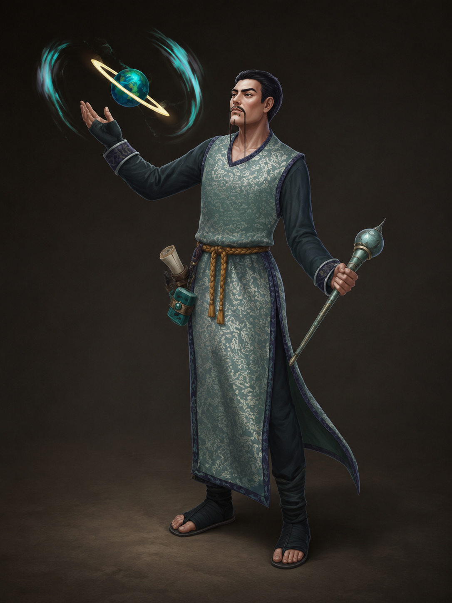

Northridge · Opfinder
Huo Tian-Zhe
Second Best
Alkymistisk smed fra Karahai med en ironisk sans for humor — butikkens navn er hans egen vits på sin bekostning. Sælger bomber og ammunition. Kan nu levere moderate bombs og elixirs.